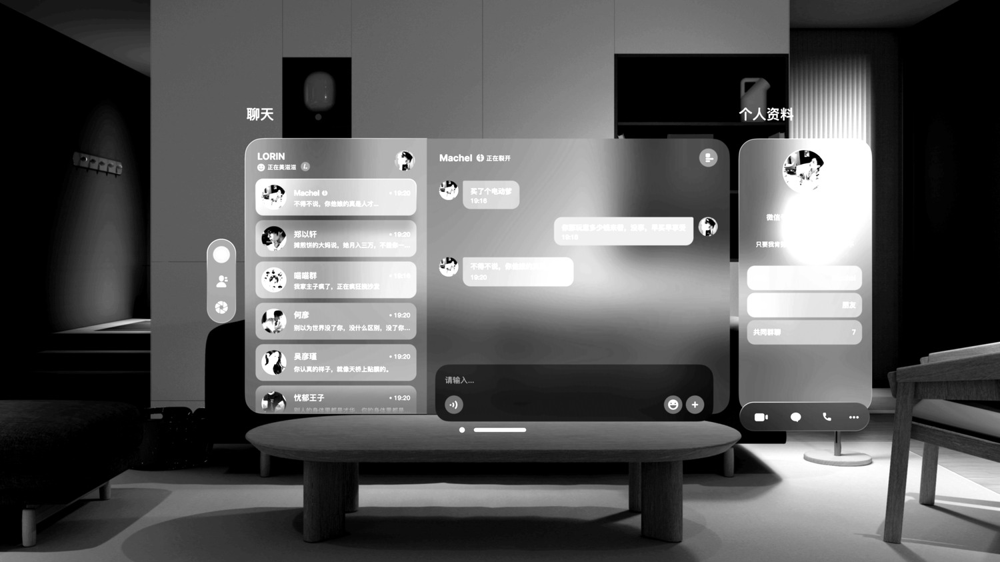
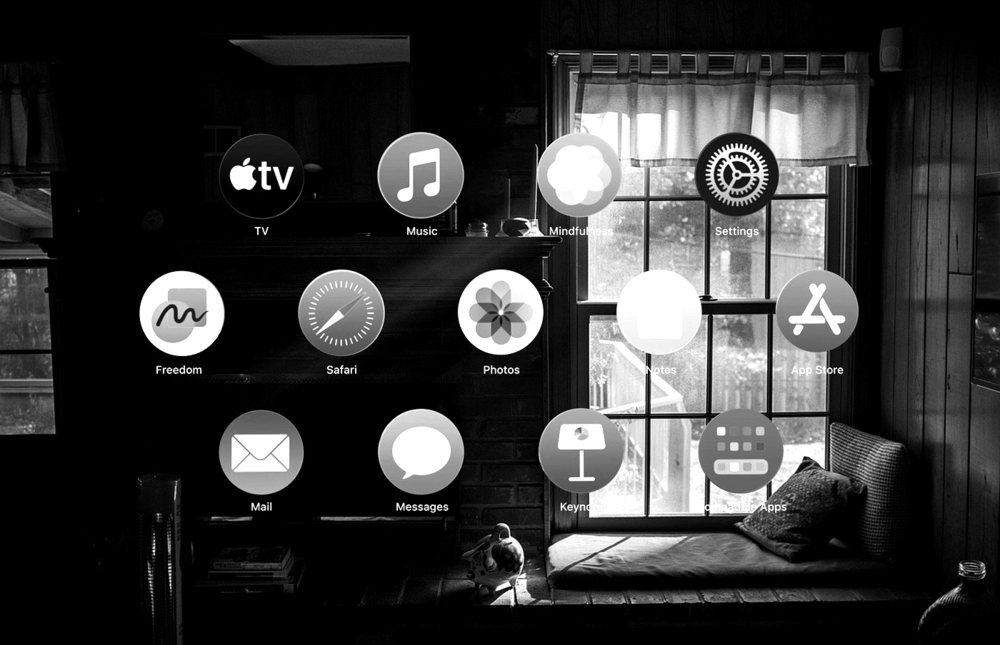
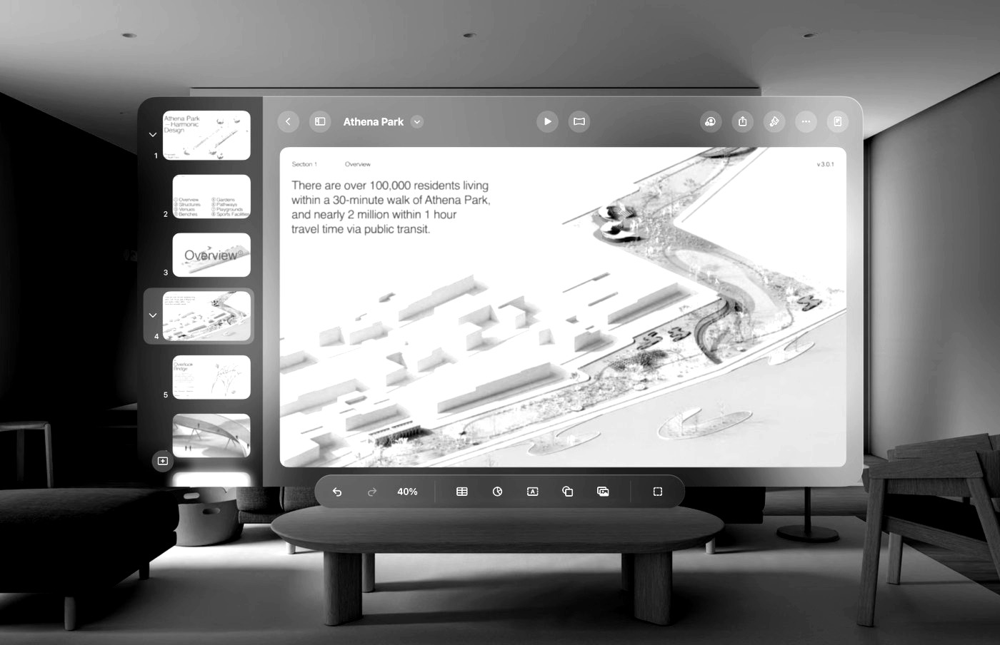
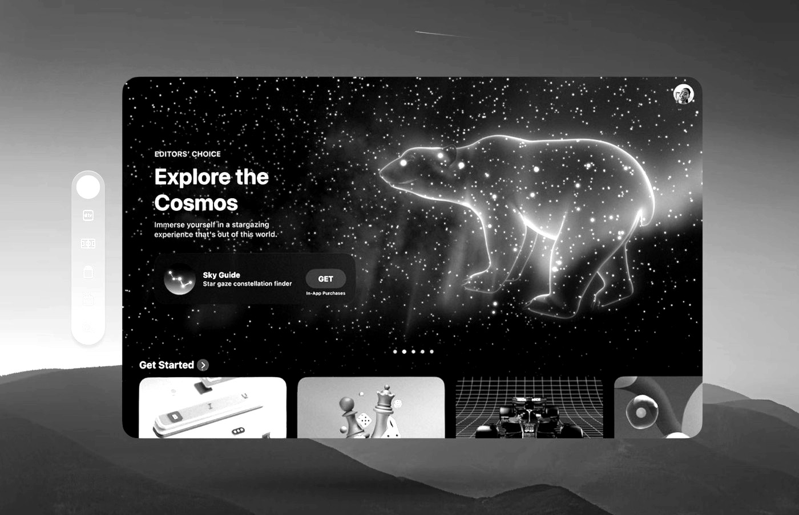
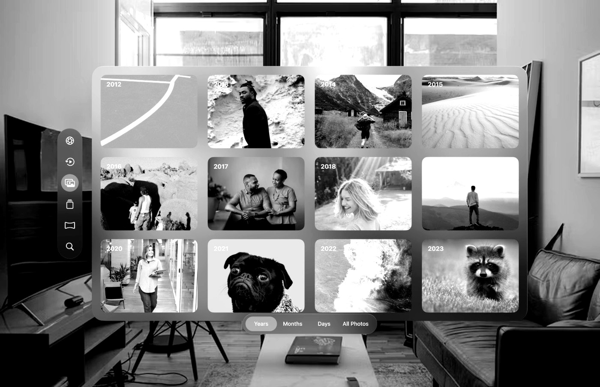
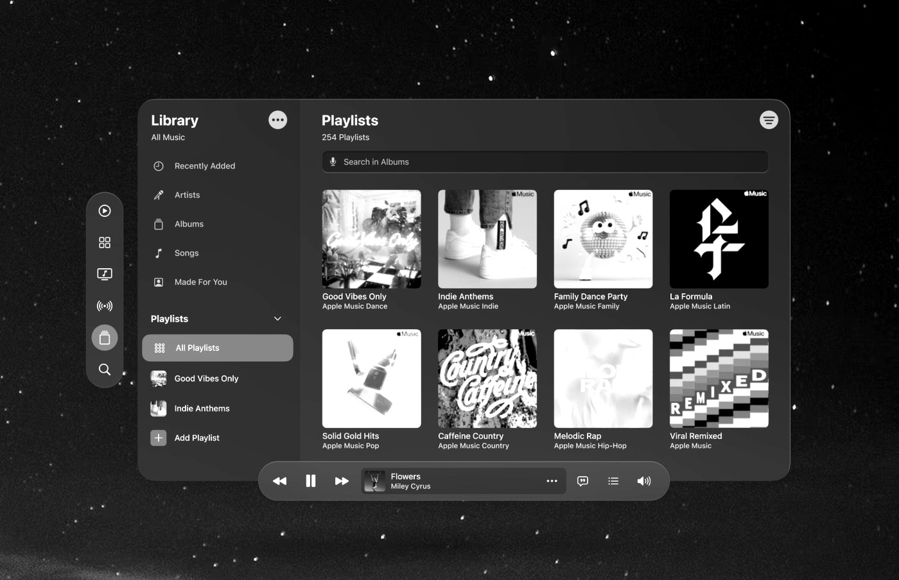

Each frame below is a reference screen reduced to structure: greyscale, photographic
backdrop flattened, so what remains is the part that gets copied — window placement, proportions,
row rhythm, control arrangement. Colour and imagery belong to the material that goes inside the
windows; they are not part of the design. Each screen is labelled by the Collider surface it feeds.
Ticker
Bottom window, dock width, 40% height at most. The row list carries the summaries;
tapping a row opens that model's thread in the second pane.

Reference structureThree windows. Two are Collider's: the row list and the open
thread. The third panel on the right is not part of this app and is not built. The small vertical
pill on the left edge is the system rail and is shared across every surface.
Row
Avatar · model name · response preview · time, right-aligned, one line tall.
Open
Preview is replaced by the thread in the second window.
Thread
Model name and status in the header; composer pill pinned to the bottom.
Rail
Floats outside every window. Never inside a content rect.
Apps platter
Seven icons, centred, background dimmed, click away to close.

Reference structureColumns are evenly spaced and the rows are staggered — odd rows
shift by half a pitch. Labels sit under each icon. The environment stays visible behind, dimmed.
Grid
Four columns, three rows, staggered.
Icon
Full circle. Label centred beneath.
Backdrop
Dimmed, never replaced.
Close
Click away. The platter is not a sheet.
Smart Gen
Cards, boards, canvas and Genie. Active, Urgent and All. New card. Genie is Pro and above.

Reference structureOne wide working window. Tools sit along an edge; the canvas is
the largest single region on screen and is left uninterrupted.
Window
Single wide work surface.
Canvas
Largest region; tools stay on the edges.
Views
Cards · Boards · Canvas · Genie.
Gate
Genie is Pro+. Cards, boards and canvas are free.
Discover Market
Images only. Picture row, labelled looks, two-column feed. Not the wallpaper store.

Reference structureOne window, three horizontal bands: hero, then a row beneath it,
then a feed. The feed is clipped mid-card at the window's lower edge — a window clips its content, and
that is correct rather than a layout fault.
Bands
Hero → labelled looks row → two-column feed.
Content
Images only.
Edge
Feed clips at the window edge.
Is not
The wallpaper store, or a shelf of saved messages.
Theme Gallery
Free background swap. Image only — the glass does not change.

Reference structureA grid window floating over the environment. The glass is
identical everywhere; only the imagery inside changes between themes.
Swap
Imagery changes. Glass does not.
Switcher
Theme Gallery · Premium Marketplace · Music Collection.
Surface
Image only — no live playback while browsing.
Music Player
Plays the tracks that ship with a wallpaper. Corner volume appears once a track has played.

Reference structureTwo panes inside one window: navigation on the left, content on
the right. The transport bar is the important part — it floats at the window's bottom edge and
straddles it, half inside and half outside.
Panes
Navigation left, content right, one window.
Transport
Floats outside the window, straddling its bottom edge.
Rail
Floats outside on the left, vertically centred on the window.